Extraction review - Group 6 (en)
95 questions from group-6-en.pdf - 88 with a picture - 1 with an uncertain picture mapping. The correct option is highlighted in green.
Uncertain picture mapping:
111.PDF page 1 - g6-q001
Traffic is prohibited for:
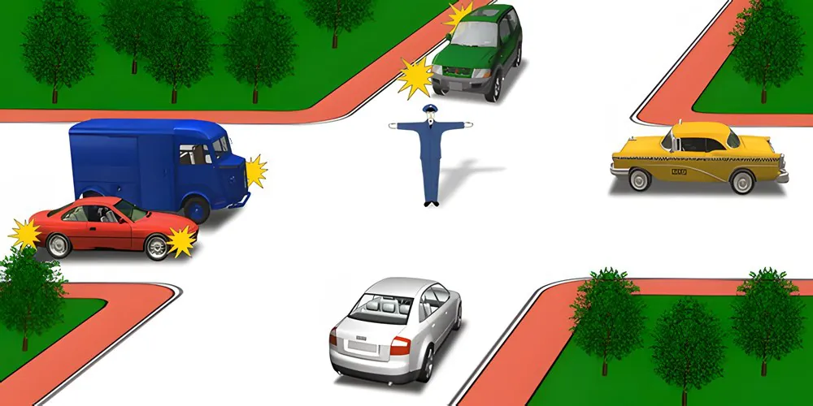
- The red and white automobiles.
- The blue, green, and white automobiles.
- The white, blue, and yellow automobiles.
Answer: 2
2.PDF page 1 - g6-q002
Which drivers are permitted to proceed straight ahead?
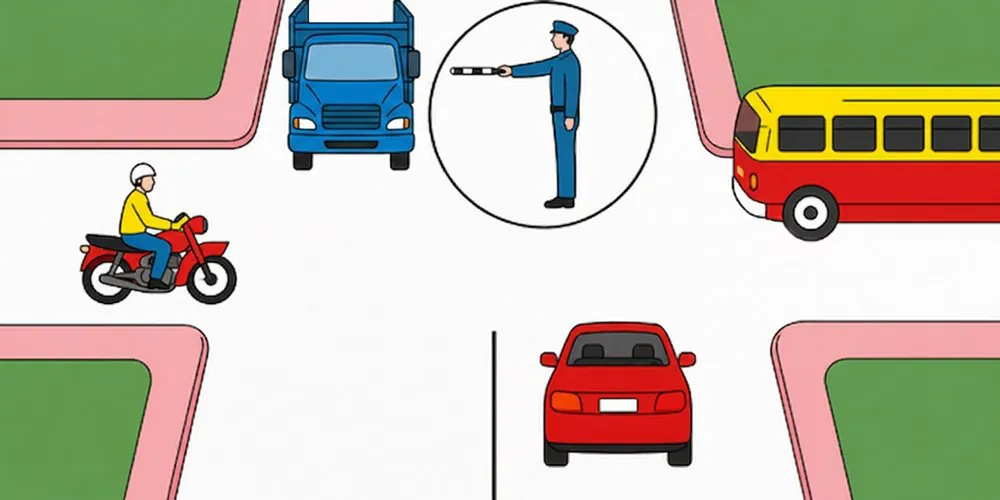
- The bus driver and the motorcycle operator.
- The passenger-car driver and the truck driver.
- The passenger-car driver.
Answer: 3
3.PDF page 2 - g6-q003
Which vehicle driver must yield?
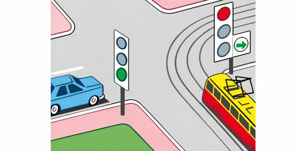
- The automobile driver.
- The tram operator.
Answer: 2
4.PDF page 2 - g6-q004
If the traffic controller’s right arm is extended forward, traffic of non-rail vehicles is permitted:
(no picture)
- From the left side, to the left and by making a U-turn.
- From the right side, to the right only.
- From the left side, in all directions.
- From the rear, to the right only.
Answer: 3
5.PDF page 2 - g6-q005
The vehicles will proceed through the intersection in the following order:
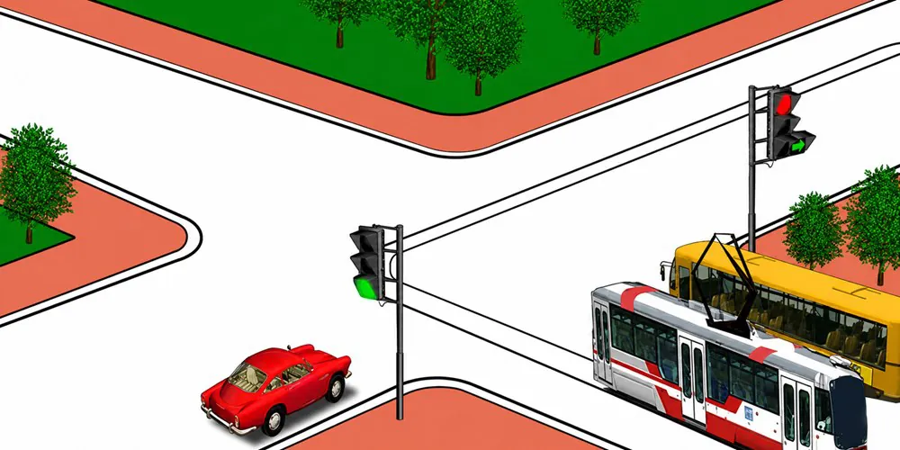
- The tram and the bus, then the passenger car.
- The tram, the passenger car, the bus.
- The passenger car, then the tram and the bus.
Answer: 3
6.PDF page 3 - g6-q006
Which answer correctly identifies the vehicle or vehicles permitted to proceed?
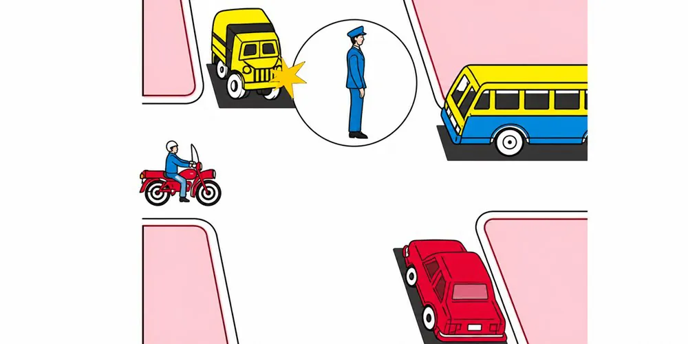
- The motorcycle.
- The truck.
- The bus.
- The passenger car.
- The passenger car and the truck.
Answer: 4
7.PDF page 3 - g6-q007
Which vehicle driver must yield?
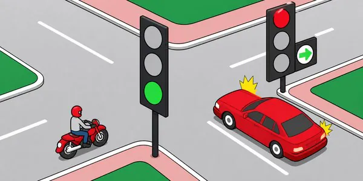
- The motorcycle operator.
- The automobile driver.
Answer: 2
8.PDF page 4 - g6-q008
This signal given by the traffic controller means that traffic is permitted for:
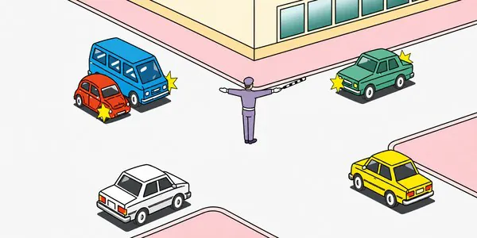
- The blue and green automobiles; traffic is prohibited for the red, yellow, and white automobiles.
- The blue, red, and green automobiles; traffic is prohibited for the yellow and white automobiles.
Answer: 2
9.PDF page 4 - g6-q009
Which vehicles may make a right turn?
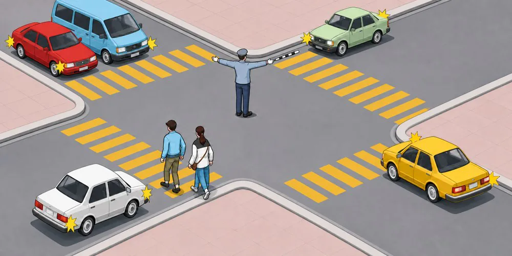
- Only the red automobile.
- All vehicles.
- The red and green automobiles.
Answer: 3
10.PDF page 5 - g6-q010
Traffic is permitted:

- Straight ahead.
- To the right through the first passage.
- To the right through the second passage.
- To the right through the first and second passages.
Answer: 2
11.PDF page 5 - g6-q011
Traffic is permitted:
same image object is also used by question 10
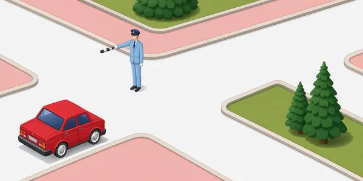
- To the right through the first passage.
- Straight ahead and to the right through the first passage.
Answer: 1
12.PDF page 5 - g6-q012
If the traffic controller’s arms are extended to the sides or lowered, traffic of non-rail vehicles is permitted:
(no picture)
- From the front and rear, to the right only.
- From the left and right sides, straight ahead and to the right.
- From the left and right sides, straight ahead only.
Answer: 2
13.PDF page 6 - g6-q013
The driver of the red automobile:
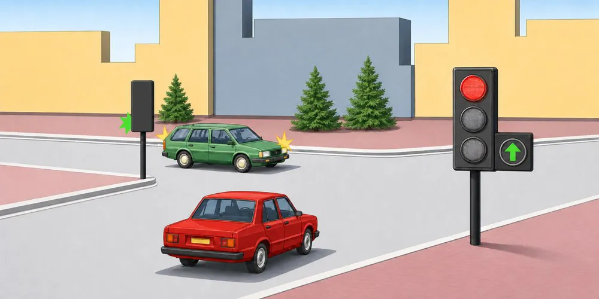
- Must yield.
- Has the right-of-way.
Answer: 1
14.PDF page 6 - g6-q014
Which vehicles are permitted to proceed?
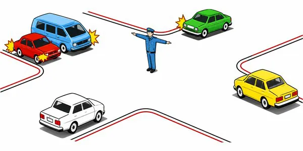
- The yellow and red automobiles.
- The green, red, and white automobiles.
- The white and green automobiles.
Answer: 1
15.PDF page 7 - g6-q015
Under which traffic signal may the automobile driver complete the U-turn?
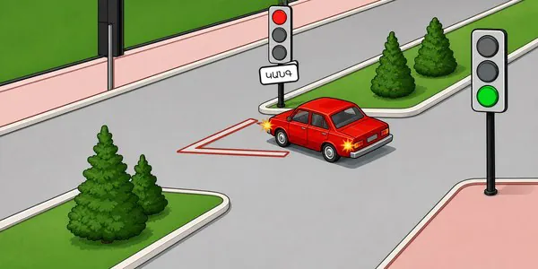
- Red.
- Green.
- Any signal.
Answer: 2
16.PDF page 7 - g6-q016
What does the combination of yellow and red traffic signals mean?
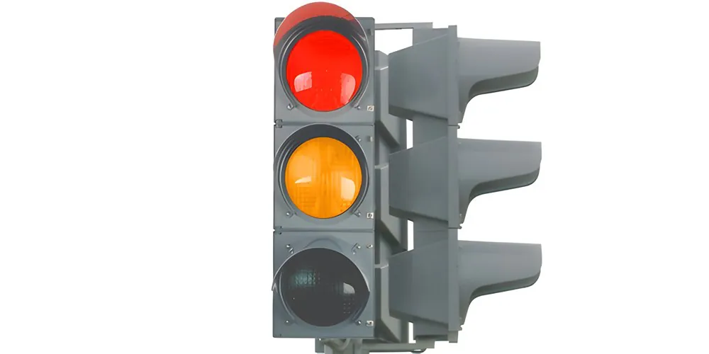
- Traffic may begin.
- Traffic is prohibited, and the signals indicate that the green signal will turn on shortly.
- A vehicle with a special audible signal and flashing beacons activated is approaching the intersection.
Answer: 2
17.PDF page 8 - g6-q017
In which image is the driver making the turn correctly?
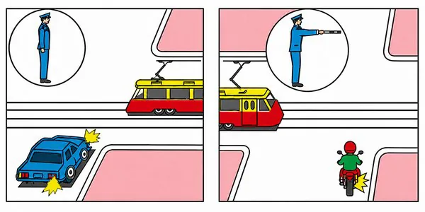
- In the left image.
- In the right image.
Answer: 1
18.PDF page 8 - g6-q018
When the traffic signal is green, must the tram operator yield to vehicles approaching from other directions?
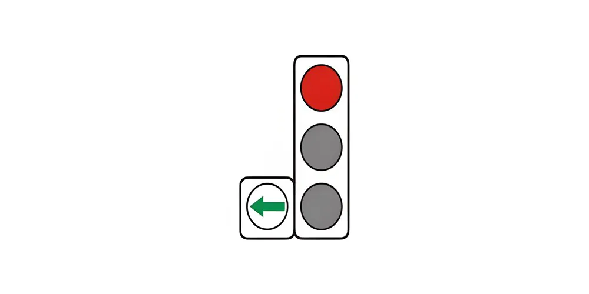
- Yes.
- No.
Answer: 1
19.PDF page 9 - g6-q019
This traffic signal is used to regulate traffic:
- Across the entire width of the roadway.
- In roadway lanes where the direction of traffic may change to the opposite direction.
- Only in lanes designated for public transit vehicles.
Answer: 2
20.PDF page 9 - g6-q020
If the traffic controller’s right arm is extended forward, traffic of non-rail vehicles from the controller’s left side is permitted:
(no picture)
- In all directions.
- To the left only.
Answer: 1
21.PDF page 9 - g6-q021
Which vehicles are permitted to proceed under this traffic signal?
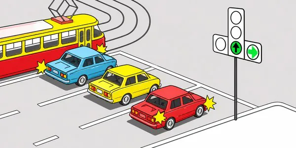
- The tram, the yellow automobile, and the red automobile.
- The yellow and red automobiles.
- All vehicles.
Answer: 2
22.PDF page 10 - g6-q022
Traffic is permitted for:
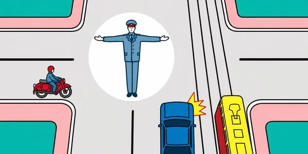
- All vehicles.
- The motorcycle.
- The automobile and the motorcycle.
Answer: 2
23.PDF page 10 - g6-q023
If the traffic controller’s arms are extended to the sides or lowered, traffic of non-rail vehicles from the controller’s left and right sides is permitted:
(no picture)
- Straight ahead and to the right.
- Straight ahead only.
Answer: 1
24.PDF page 10 - g6-q024
Which vehicle driver has the right-of-way?
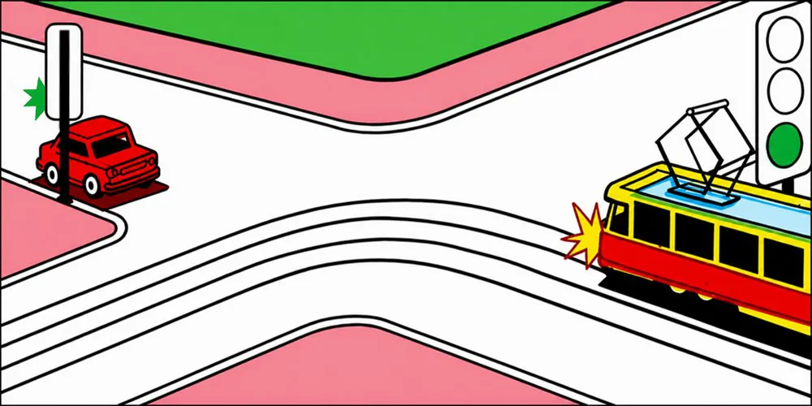
- The automobile driver.
- The tram operator.
Answer: 2
25.PDF page 11 - g6-q025
Traffic is prohibited for:
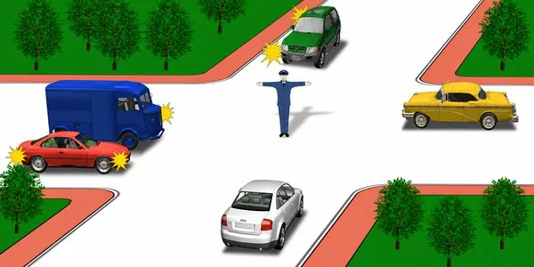
- The green and white automobiles.
- The white, blue, and green automobiles.
- The white and yellow automobiles.
- The green and yellow automobiles.
Answer: 2
26.PDF page 11 - g6-q026
When this traffic signal is red, traffic is prohibited:
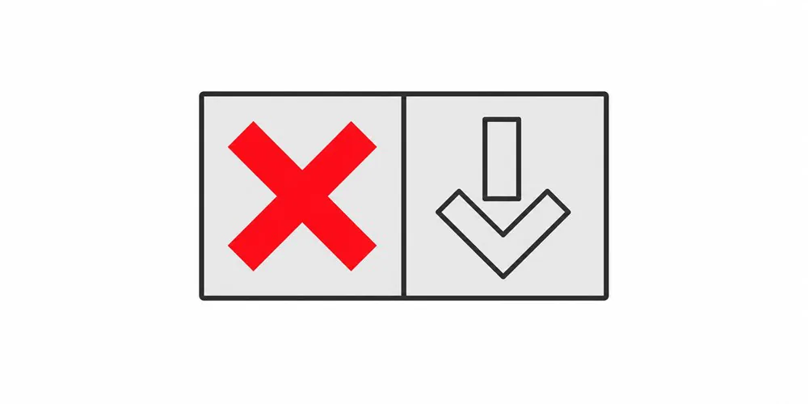
- Across the entire width of the roadway.
- At a speed not exceeding 50 km/h.
- In the lane over which the signal is located.
Answer: 3
27.PDF page 11 - g6-q027
What is the meaning of the circular flashing green traffic signal?
(no picture)
- It indicates that entering the intersection is prohibited.
- It permits traffic and indicates that its display period is ending and a prohibitory signal will be activated shortly.
Answer: 2
28.PDF page 12 - g6-q028
The vehicles will proceed through the intersection in the following order:
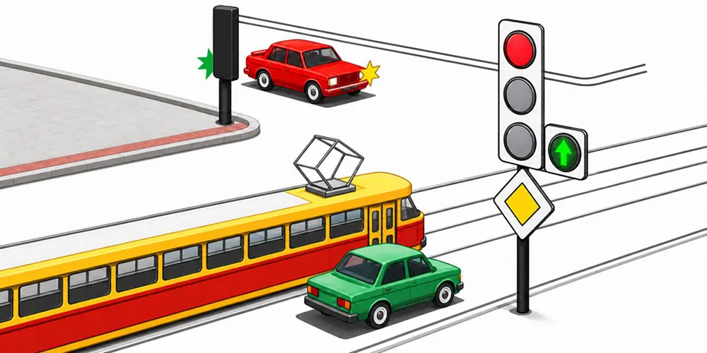
- The tram, the red automobile, the green automobile.
- The red automobile, then the tram simultaneously with the green automobile.
- The tram simultaneously with the green automobile, then the red automobile.
Answer: 2
29.PDF page 12 - g6-q029
Which answer correctly identifies the vehicles that are permitted to proceed?
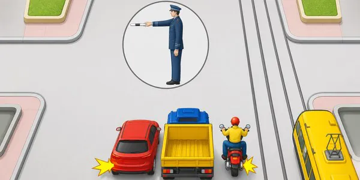
- The automobiles and the motorcycle.
- All vehicles.
- The automobiles and the tram.
Answer: 1
30.PDF page 12 - g6-q030
If the traffic controller’s right arm is extended forward, traffic of non-rail vehicles from the controller’s left side is permitted:
(no picture)
- Straight ahead and to the left.
- In all directions.
Answer: 2
31.PDF page 13 - g6-q031
Traffic is prohibited for:

- The blue-and-yellow automobile when proceeding to the left.
- The blue-and-yellow automobile when proceeding straight ahead, and the red automobile when proceeding straight ahead and to the right.
- The red automobile.
Answer: 1
32.PDF page 13 - g6-q032
In which direction is traffic permitted?
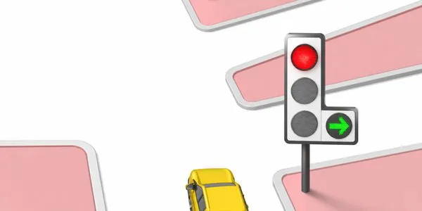
- Straight ahead and to the right through the first passage.
- To the right through the first passage.
- To the right through the second passage.
- To the right through the first and second passages.
Answer: 2
33.PDF page 14 - g6-q033
Which vehicle will proceed through the intersection first?
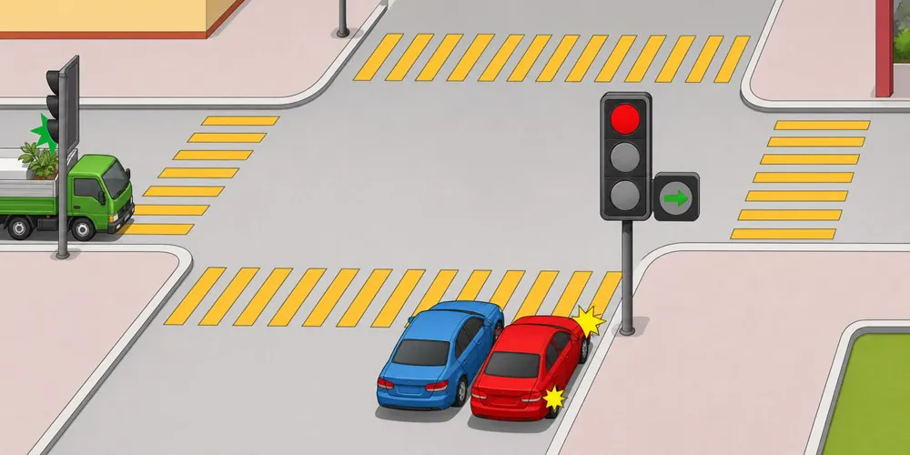
- The red automobile.
- The blue automobile.
- The green automobile.
Answer: 3
34.PDF page 14 - g6-q034
In which image is the driver making the turn correctly?

- In the left image.
- In the right image.
- In both images.
Answer: 1
35.PDF page 15 - g6-q035
The red automobile will proceed through the intersection:
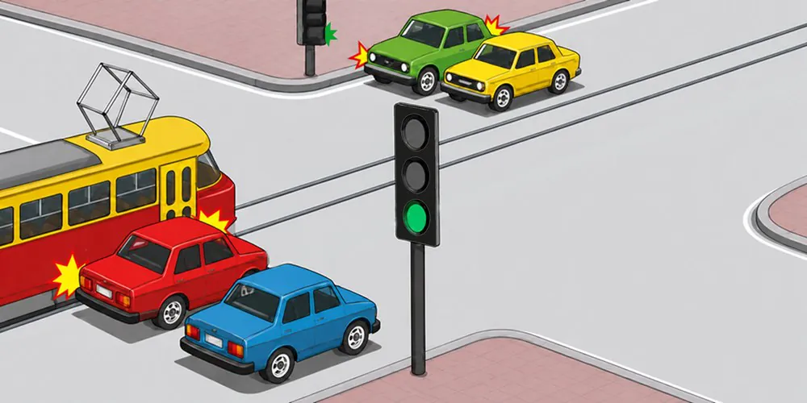
- First.
- Second.
- Third.
- Last.
Answer: 4
36.PDF page 15 - g6-q036
The automobile will proceed through the intersection:
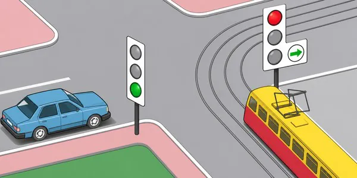
- First.
- Second.
Answer: 1
37.PDF page 16 - g6-q037
Traffic is permitted for:
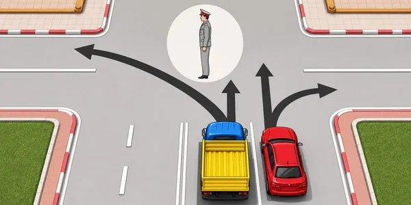
- The blue-and-yellow automobile straight ahead, and the red automobile to the right.
- The red automobile straight ahead and to the right, and the blue-and-yellow automobile straight ahead.
- Both automobiles straight ahead only.
Answer: 2
38.PDF page 16 - g6-q038
Traffic is permitted for:
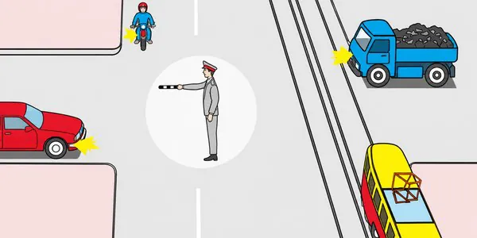
- The red automobile.
- The motorcycle.
- The tram and the red automobile.
- The tram.
- The blue automobile.
Answer: 1
39.PDF page 17 - g6-q039
Is it permitted to proceed along the indicated path when the reversible traffic signals are off?
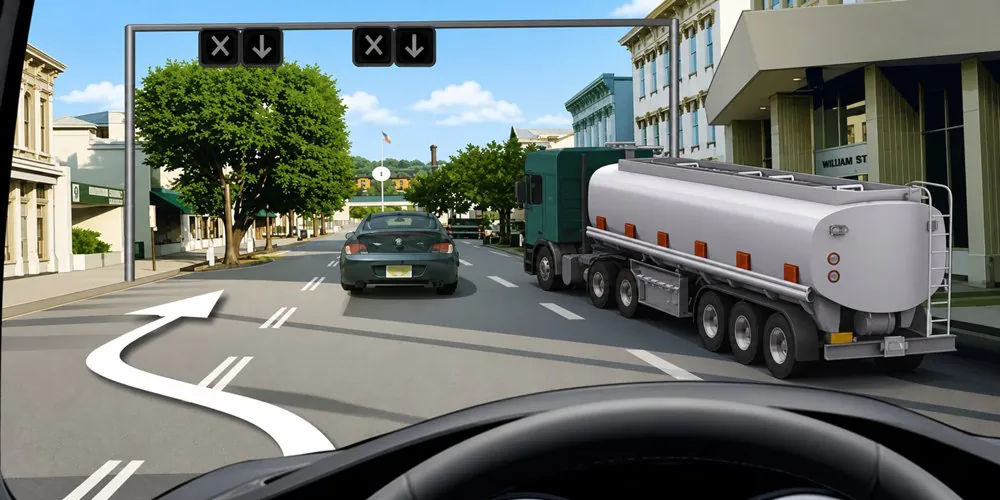
- Permitted.
- Permitted for the purpose of passing.
- Prohibited.
- Permitted if there are no oncoming vehicles.
Answer: 3
40.PDF page 17 - g6-q040
In this situation, which vehicles are permitted to continue?
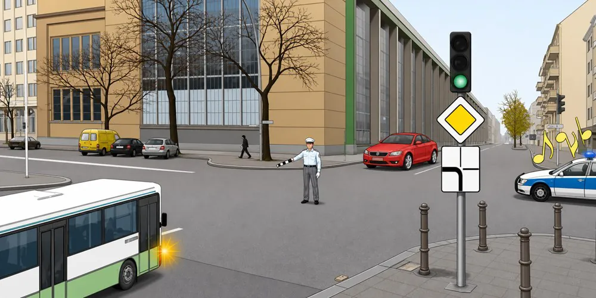
- The passenger car straight ahead, the patrol vehicle in all directions, and the bus to the right only.
- Only the patrol vehicle, in all directions.
- The patrol vehicle in all directions and the bus to the right only.
Answer: 3
41.PDF page 18 - g6-q041
What does the traffic signal indicate?
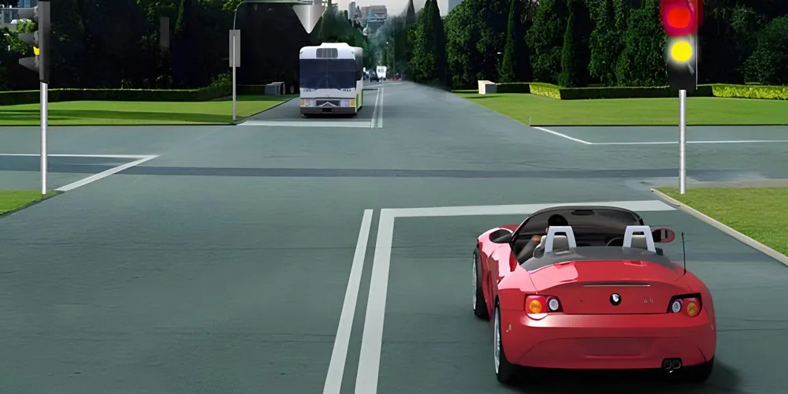
- The traffic signal is malfunctioning.
- When proceeding through the intersection, drivers must follow the requirements of the traffic sign.
- Drivers must wait for a permissive traffic signal.
Answer: 3
42.PDF page 18 - g6-q042
Is the passenger-car driver permitted to pass the bus when the reversible traffic signal is off?
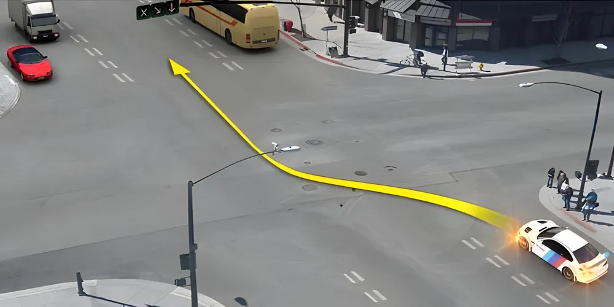
- Permitted.
- Permitted if the bus is moving at 30 km/h.
- Permitted if there are no oncoming vehicles.
- Prohibited.
Answer: 4
43.PDF page 19 - g6-q043
Which vehicle must yield?
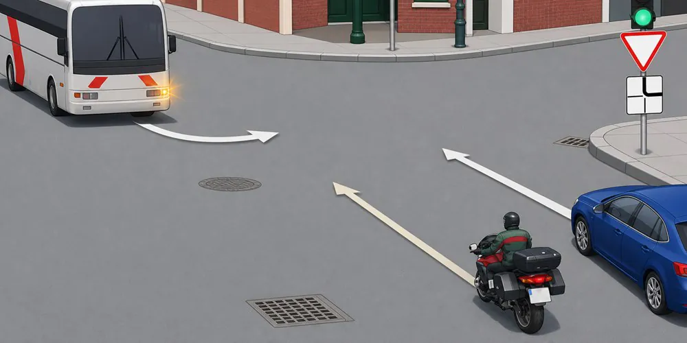
- The bus.
- The motorcycle and the passenger car.
Answer: 1
44.PDF page 19 - g6-q044
The following drivers are permitted to continue along the indicated paths:
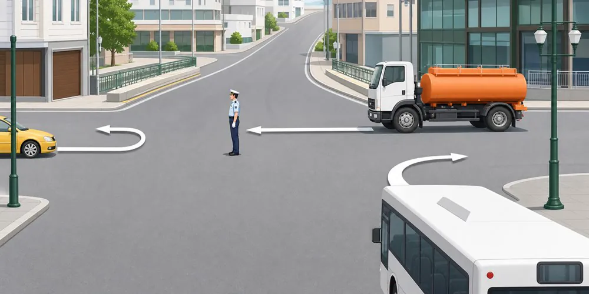
- The truck driver.
- The bus driver and the truck driver.
- The passenger-car driver and the bus driver.
- The bus driver.
Answer: 4
45.PDF page 20 - g6-q045
The vehicles will proceed through the intersection in the following order:
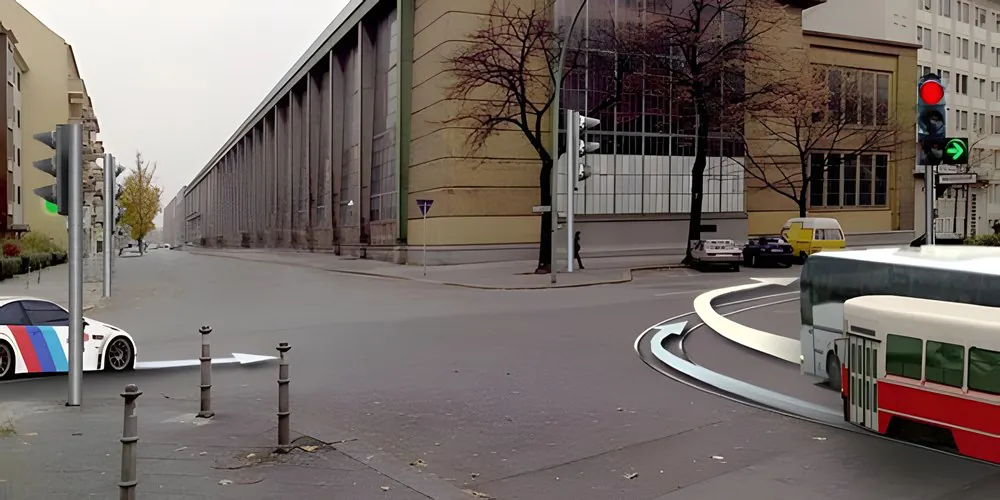
- The tram, the passenger car, the bus.
- The passenger car, the tram, the bus.
- The passenger car, the bus, the tram.
Answer: 2
46.PDF page 20 - g6-q046
In which direction may the driver continue?
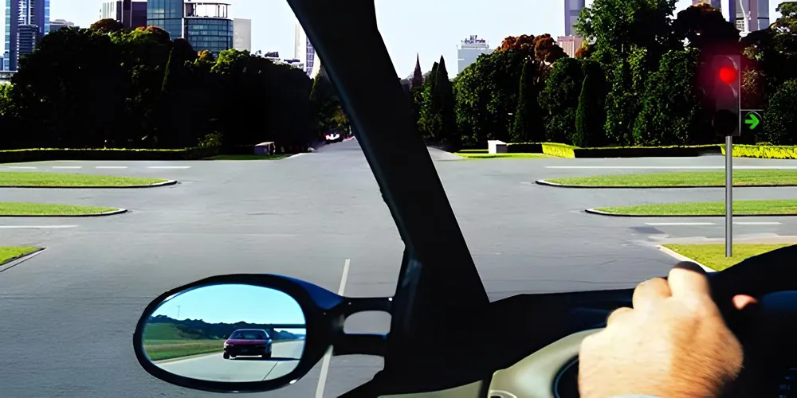
- To the right through the first passage.
- To the right through the first and second passages.
- To the left through the first passage.
Answer: 1
47.PDF page 21 - g6-q047
When making a right turn, the driver must yield to:
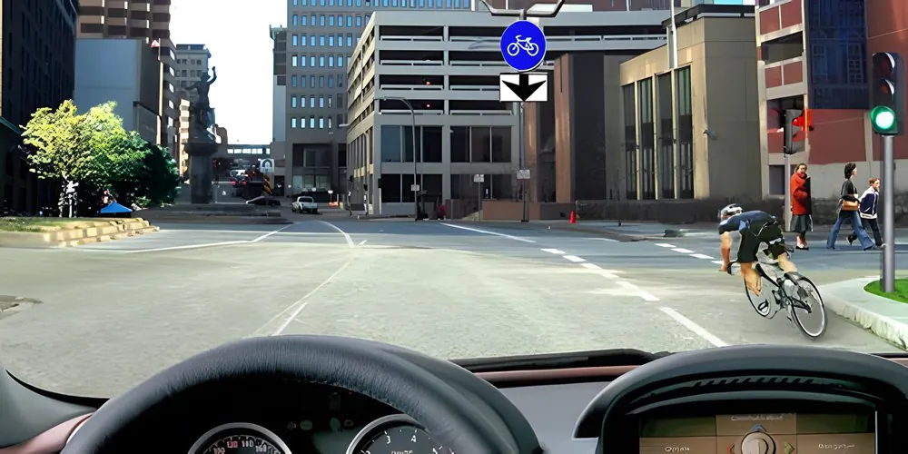
- Only the bicyclist.
- Only the pedestrians.
- The pedestrians and the bicyclist.
- The driver may continue without stopping.
Answer: 3
48.PDF page 21 - g6-q048
The vehicles will proceed through the intersection in the following order:
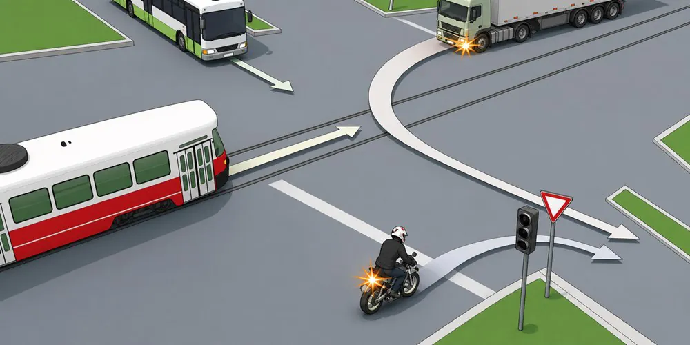
- The tram, the bus, the truck, the motorcycle.
- The bus, the truck, the tram, the motorcycle.
- The bus, then the tram and the motorcycle, then the truck.
Answer: 3
49.PDF page 22 - g6-q049
In this situation, to which tram operator must you yield?
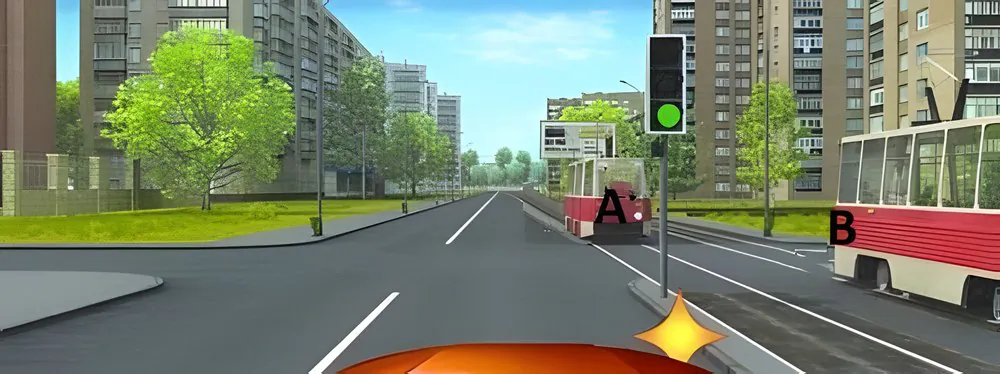
- Neither of them.
- Both tram operators.
- Only A.
Answer: 2
50.PDF page 22 - g6-q050
Which driver has the right-of-way?
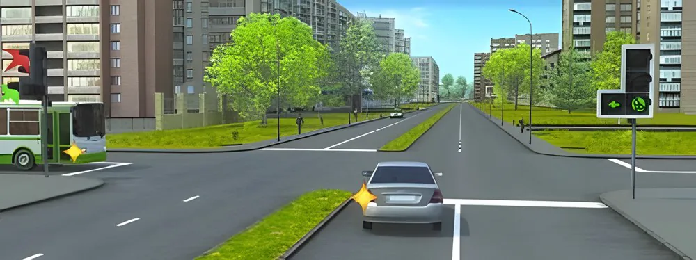
- The bus driver.
- The passenger-car driver.
Answer: 2
51.PDF page 22 - g6-q051
In this situation, when making a left turn:
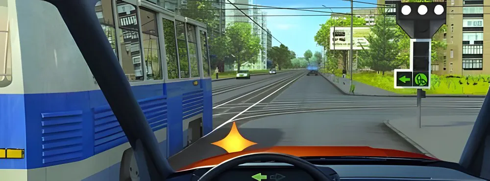
- I will yield to the tram.
- I will proceed through the intersection first.
Answer: 2
52.PDF page 23 - g6-q052
What should you do in this situation?
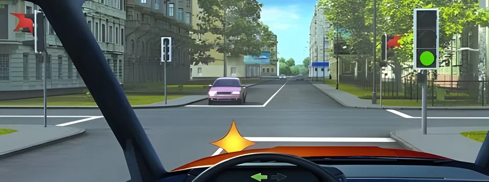
- Enter the intersection and, after yielding to the passenger-car driver, proceed through the intersection.
- Wait before the “Stop Line” until the passenger-car driver has proceeded through the intersection.
- Proceed first.
Answer: 1
53.PDF page 23 - g6-q053
Which driver violates the traffic rules when making the turn?
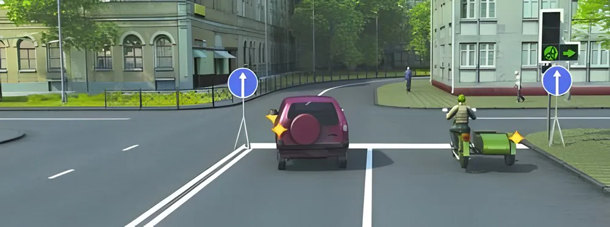
- The passenger-car driver.
- The driver of the motorcycle.
- Both drivers.
- No one.
Answer: 3
54.PDF page 23 - g6-q054
In this situation, when making a right turn, must you yield?
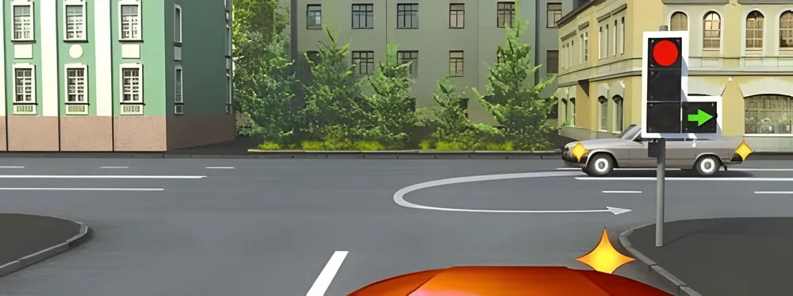
- Yes.
- No.
Answer: 1
55.PDF page 24 - g6-q055
Is a right turn permitted in this situation?
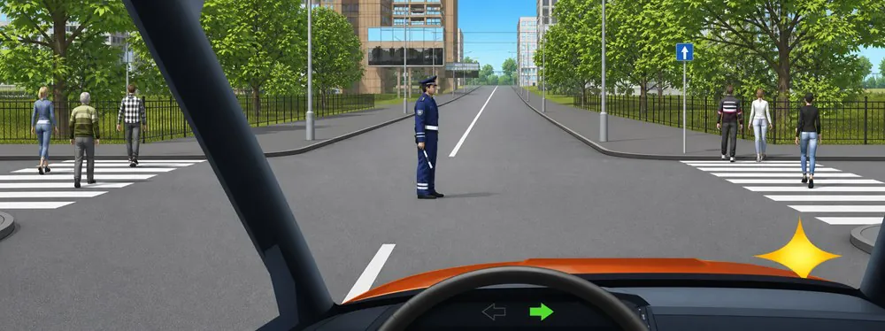
- Yes, provided you do not interfere with pedestrians.
- No.
Answer: 1
56.PDF page 24 - g6-q056
In this situation, must you yield to the tram operator?
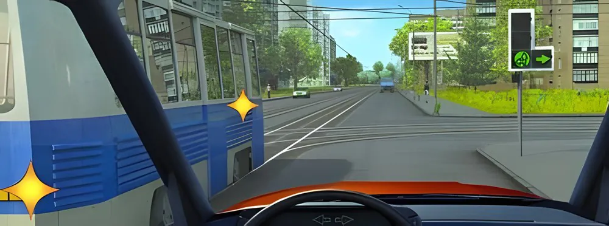
- No.
- Yes.
Answer: 2
57.PDF page 24 - g6-q057
When the green traffic signal turns on, the driver:
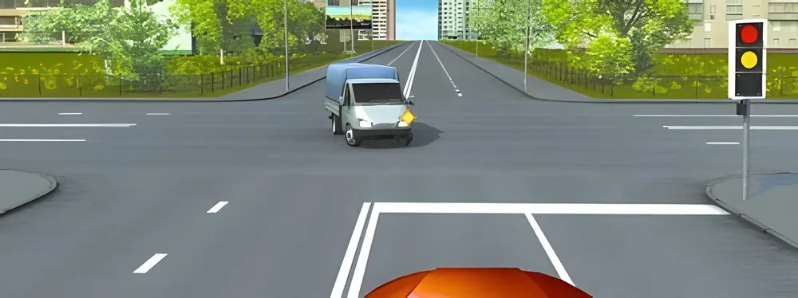
- Must yield to the truck driver.
- Has the right-of-way.
Answer: 1
58.PDF page 25 - g6-q058
At this intersection, the driver:
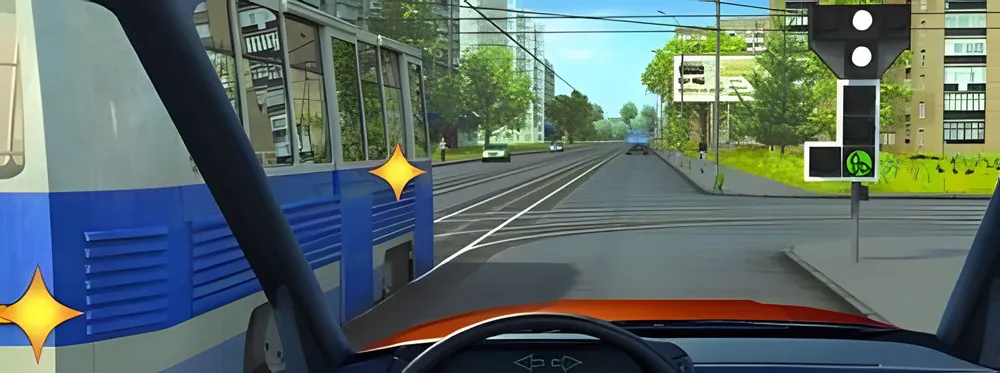
- Will proceed first.
- Must yield to the tram.
Answer: 1
59.PDF page 25 - g6-q059
When proceeding straight through the intersection, the driver:
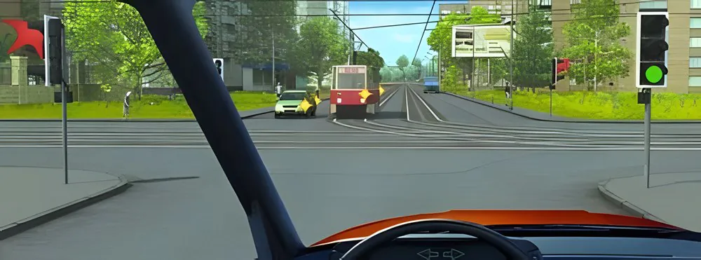
- May proceed first.
- Must yield to the tram.
- Must yield to both drivers.
Answer: 2
60.PDF page 25 - g6-q060
When making the turn, the driver must yield to:
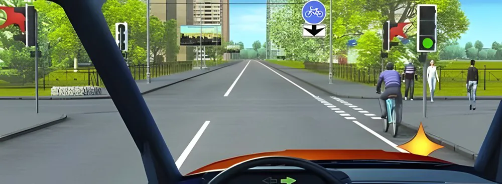
- Pedestrians only.
- The bicyclist.
- The bicyclist and the pedestrians.
Answer: 3
61.PDF page 26 - g6-q061
When making a right turn, must you yield to the driver approaching in the oncoming lane?
- Yes.
- No.
Answer: 2
62.PDF page 26 - g6-q062
When proceeding straight through the intersection:
- We may proceed first.
- We must yield to the passenger-car driver.
Answer: 2
63.PDF page 26 - g6-q063
When making a left turn, you must yield to:
- Only the passenger-car driver.
- Pedestrians only.
- The passenger-car driver and the pedestrians.
Answer: 3
64.PDF page 27 - g6-q064
In this situation, is a right turn permitted?
- No.
- Yes, provided you do not interfere with the pedestrian.
Answer: 2
65.PDF page 27 - g6-q065
When making a left turn:
- You must yield to the tram operator.
- You will proceed through the intersection first.
Answer: 1
66.PDF page 27 - g6-q066
Which traffic signs do not apply when their requirements conflict with traffic signal indications?
(no picture)
- Priority signs.
- Prohibitory signs.
- Mandatory signs.
- All of the above.
Answer: 1
67.PDF page 28 - g6-q067
In this situation, who must yield?
- The passenger-car driver.
- The tram operator.
Answer: 2
68.PDF page 28 - g6-q068
When making a right turn:
- We must yield to the tram operator.
- We will proceed through the intersection first.
Answer: 2
69.PDF page 28 - g6-q069
You intend to make a left turn. To whom must you yield?
- Only the tram operator.
- No one.
- The automobile driver and the tram operator.
Answer: 3
70.PDF page 29 - g6-q070
When making a left turn:
- I will complete the maneuver without stopping.
- After entering the intersection, I will stop before the second “Stop Line” and wait for the green signal.
Answer: 2
71.PDF page 29 - g6-q071
In this situation, must we yield to the truck driver?
- Yes.
- No.
Answer: 1
72.PDF page 29 - g6-q072
In this situation, when making a left turn, you must:
- Enter the intersection and wait for the traffic controller’s signal permitting a left turn.
- Stop before the “Stop Line” pavement marking and wait for the traffic controller’s signal permitting a left turn.
- Enter the intersection and, after yielding to the driver approaching in the oncoming lane, proceed through the intersection.
Answer: 2
73.PDF page 30 - g6-q073
In which case may you proceed through the intersection without yielding to another road user?
- When proceeding straight ahead.
- When making a right turn.
- When making a left turn.
Answer: 1
74.PDF page 30 - g6-q074
When making a right turn, you must:
- Stop before the “Stop Line” so as not to interfere with pedestrians.
- Enter the intersection and stop so as not to interfere with pedestrians.
- Proceed through the intersection without stopping.
Answer: 2
75.PDF page 30 - g6-q075
When making a right turn:
- You must yield to the passenger-car driver.
- You will proceed through the intersection first.
Answer: 2
76.PDF page 31 - g6-q076
After the permissive traffic signal turns on, we may enter the intersection:
- Only when making a turn or a U-turn.
- In all cases.
Answer: 1
77.PDF page 31 - g6-q077
When the green traffic signal turns on, we must:
- Make sure that there are no pedestrians who have not finished crossing in the part of the pedestrian crossing that is not visible.
- Immediately start moving in accordance with the traffic signal.
Answer: 1
78.PDF page 31 - g6-q078
In this situation, when making a left turn, you must yield to:
- Only the pedestrian.
- The bus driver.
- The bus driver and the pedestrian.
- No one.
Answer: 3
79.PDF page 32 - g6-q079
Must you yield to the bus?
- Yes.
- No.
Answer: 1
80.PDF page 32 - g6-q080
In this situation, when making a U-turn, must you yield to the other driver?
- No.
- Yes.
Answer: 2
81.PDF page 32 - g6-q081
In which direction or directions may the driver continue in this situation?
- Straight ahead only.
- Straight ahead and to the right.
- Straight ahead and to the left.
- In all directions.
Answer: 1
82.PDF page 33 - g6-q082
Which driver may continue?
- Neither driver.
- Only the bus driver.
- Both drivers.
Answer: 3
83.PDF page 33 - g6-q083
Proceeding across the railroad crossing is:
- Permitted.
- Prohibited.
Answer: 1
84.PDF page 33 - g6-q084
The driver is:
- Prohibited from proceeding through the intersection.
- Permitted to proceed through the intersection in all cases.
- Permitted to proceed through the intersection if the driver cannot stop before the “Stop Line” without sudden braking.
Answer: 3
85.PDF page 34 - g6-q085
When complying with the traffic signal, where must the driver stop?
- Before the traffic signal.
- Before the intersecting roadway.
- At any location.
Answer: 1
86.PDF page 34 - g6-q086
A left turn is permitted:
- From the reversible traffic lane.
- From the lane indicated in the image.
Answer: 2
87.PDF page 34 - g6-q087
Traffic is permitted:
- Straight ahead only.
- To the right only.
- Straight ahead and to the right.
Answer: 3
88.PDF page 35 - g6-q088
Traffic is permitted:
- Straight ahead and to the right.
- Straight ahead only.
- To the right only.
Answer: 3
89.PDF page 35 - g6-q089
The arrows shown in the green traffic signal indicate that:
- A right turn is prohibited.
- Traffic to the right is controlled by an additional traffic-signal section.
Answer: 2
90.PDF page 35 - g6-q090
Is passing the truck permitted?
- Yes.
- No.
Answer: 2
91.PDF page 36 - g6-q091
In which direction or directions may the driver continue in this situation?
- To the left only.
- The driver must wait for a permissive signal.
- To the left and by making a U-turn.
Answer: 3
92.PDF page 36 - g6-q092
In this situation, entering the reversible traffic lane is:
- Permitted.
- Permitted only for the purpose of passing.
- Prohibited.
Answer: 1
93.PDF page 36 - g6-q093
Proceeding straight ahead from the indicated lane is:
- Permitted.
- Permitted only after the main green signal turns on.
- Prohibited.
Answer: 3
94.PDF page 37 - g6-q094
Traffic is permitted:
- Straight ahead and to the right.
- To the right only.
- In all directions.
Answer: 3
95.PDF page 37 - g6-q095
In this situation, traffic is:
- Permitted.
- Prohibited.
Answer: 2